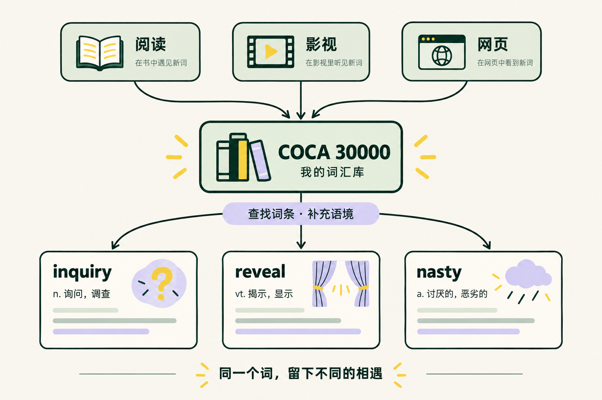
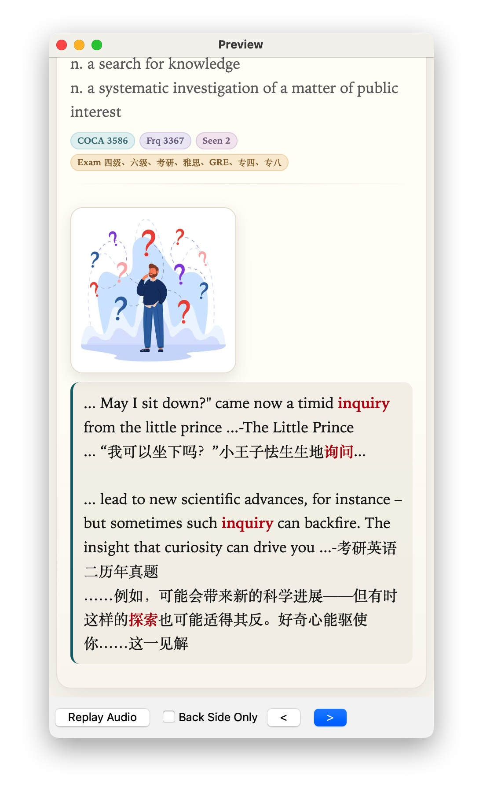

词次构成的语料
来自 1990–2019 年的英语材料。这里的“词次”是语料规模，不是要背的单词数量。
书里读到的，电影里听到的，网页上查到的。
把这些相遇，留在同一个词条里。

COCA 是美国当代英语语料库。它从不同类型的真实材料中统计用词频率，为“接下来学哪个词”提供依据。
来自 1990–2019 年的英语材料。这里的“词次”是语料规模，不是要背的单词数量。
口语、小说、杂志、报纸、学术文本、影视字幕、博客与网页，让词频不只来自一种材料。
先补常用词的缺口，再加入工作、兴趣中反复遇到的词。词频是参考，你的语境也很重要。
下载并导入 COCA 卡组，就有了一套可以搜索、补充和复习的词汇底库。遇见新语境时，回到原词条继续积累。
阅读、看剧或浏览网页时，留下值得学习的单词和原句，先弄懂它在这里的意思。
在配套阅读或观影工具的查词弹窗中，点击「发送到 COCA」，把这次遇见的原句补进主卡例句。也可以在 Anki 中手动补充。
让词频、声音和自己的例句一起成为线索。底库没有的词，用生词本补充；固定搭配可以单独记。
先导入 COCA 卡组，再通过配套工具的「发送到 COCA」入口积累例句；底库之外的词可选择「发送到生词本」。仅下载卡组不会自动采集内容。
打开单词弹窗，确认句中意思，
在底部找到「发送到 COCA」。
在查词弹窗底部，选择橙色的「发送到 COCA · 主卡例句」，让这段阅读成为下次复习的线索。
在字幕单词的弹窗里，同样找到「发送到 COCA」。让影视中听见的用法，也回到熟悉的词条中。
配套工具操作截图 · 点击图片放大查看按钮位置
一张卡片里，不只有一个中文意思。它也可以有书中的一句话、电影里的一个场景，以及你自己的理解。
从《小王子》里的询问，到阅读材料里的探究。把两次相遇放在一起，记住 inquiry 在各自语境中的含义。
音频来自下载卡组

图中例句为使用过程中积累的内容。下载的 COCA 基础卡组尚未填入这些个人例句；你可以在导入后补充自己的版本。
Fluent Forever 把声音、图像、语境和个人联系放在一起。用主动回忆检查记忆，再通过间隔复习和实际使用继续巩固。
看到英文，先试着回忆当前语境中的含义。再核对例句与图片，补充熟词的新义和搭配。
先听音频，再核对词形和发音。在短句里继续听，检查离开文字提示后还能不能理解。
把常用词放进自己的表达，核对用法。低频词可先以理解为主，不必要求每个词都立刻会说会写。
Fluent Forever 第 2、4、5、7 章；本站将这些原则整理为上面的三项练习目标。复习量应随自己的时间和遗忘情况调整。
1,000–2,000 个高频词可以作为基础，然后围绕兴趣继续扩展。更早也能用已学词练短句；开始阅读和听力时，选择能借助语境理解的分级材料或短片段。
词汇数量不是统一门槛，也不能保证读懂普通小说或听懂整部电影。遇到太多生词，就降低难度、缩短片段，并补上反复出现的词。
结合基础语法，开始短句、分级阅读和短时听力。把自己关心的话题带进来。
沿用《英语自学手册》的阶段方向，持续阅读和听说，不把背词表当成全部学习。
根据工作、兴趣和阅读需求扩展。COCA 30000 是可用的资源范围，不是必须背完的任务。
这是当前下载包的实际卡片数。
打开 Anki，导入下载的 .apkg。在「浏览」中搜索单词，核对词性与含义，选中已有笔记，把原句和来源补进 Example 字段。先保留已有内容，再追加新的语境；如果查不到这个词，可以加入生词本。
初次使用共享卡组时，不勾选「导入学习进度」。卡组内音频随包提供；部分配图使用在线链接，需要联网显示。
Anki 编辑笔记说明 ↗Anki 导入说明 ↗不需要。先找到高频词中的缺口，把已经熟悉的词暂停学习，优先处理常见和有用的词。卡片数包含重复拼写的条目，不能当作你已经掌握的不同单词数，更不等于听说读写能力。
不是。第 4 章用高频词说明基础词汇的重要性，但也展示了只有约 2,000 高频词时仍会缺失文本信息；第 7 章强调通过材料难度、时长和目标调整阅读与听力。作者官方文章建议以 1,000–2,000 高频词打底，再按职业、兴趣补充。这里把约 2,000 视为可参考的起点，而不是准入线。
《英语自学手册》「答疑篇 02」也明确表示不必背完两万再阅读：有中学基础可以开始；基础不足时，可以考虑先补到两三千。两本书的数字是路线建议，不是对所有人都成立的硬性要求。
选一个自己关心、难度合适的小片段。
把值得学习的原句，补进已有词条。
在 Anki 中复习，也试着用它表达自己。